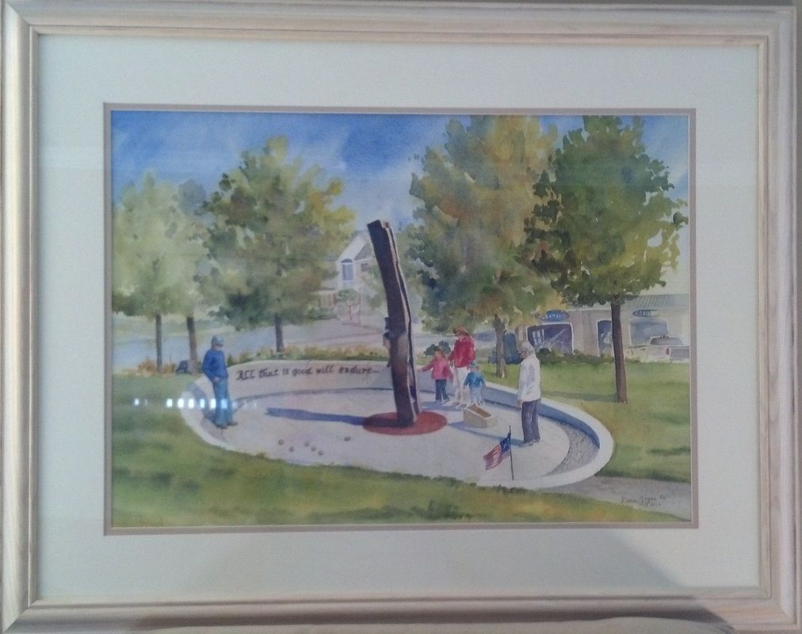

Store & Raffles
Every raffle ticket, print and donation helps keep Avalon’s volunteer fire department equipped and ready.
Donate to the department
We appreciate your support and are thankful for your donations. Give securely by credit card or PayPal.

Avalon 9-11 Memorial print
This limited-edition print is numbered and signed by the well-known Stone Harbor artist Doris Zogas, who passed away in August 2016. It reproduces the original watercolor commissioned by the Friends of the Avalon Fire Department and shows the Avalon 9-11 Memorial in the 2000 block of Dune Drive, beside Veterans Plaza.
Only 120 prints will ever be in circulation. Prints come unmatted and unframed.
To buy: call 609-967-4411 and leave a voicemail, or see us at the firehouse.
The Friends of the Avalon Fire Department are proud to help raise the funds needed to build and maintain this memorial to the victims of 9/11.
50/50 Cash Elimination Raffle
Congratulations to all of our winners, and thank you to everyone who supports the raffle. It sells out every year, often with a wait list.
- 1st ball#188Jay Mallon$500
- 50th ball#129J. Vincent Roche$500
- 100th ball#121Joe Jackson$500
- 150th ball#220Sean Luschini$500
- 200th ball#150Ernest “Butch” Blood$500
- 250th ball#166Thomas Devita$500
- 299th ball#029Jennifer Reichle$2,000
- 300th ball#0785 Cape May County OEM & Comms Dispatchers$10,000
Sponsored by the Friends of the Avalon Volunteer Fire Department. Benefits the Avalon Volunteer Fire Department. License RA-2026-05 · ID# 18-9-39541.
The 50/50 Cash Elimination Raffle
Three hundred tickets, one exciting night. Balls are drawn one by one until a single ticket is left. Along the way, $500 prizes go to the 1st, 50th, 100th, 150th, 200th and 250th balls drawn, the 299th ball wins $2,000, and the last ticket standing takes home the $10,000 grand prize.
It’s a hot ticket that sells out every year, often with a wait list, so don’t delay. Call the firehouse at 609-967-4411 to ask about tickets.
2020 raffle contestants, by ticket number
Unofficial. The written ticket stub is the official record.
- 1John Dingerdissen
- 2Jim Bruder
- 3Bob Green
- 4Marion Stewart
- 5Stacie Lissette
- 6Holly Rennie
- 7Thomas Petrella
- 8Jay Mallon
- 9Eric Frenchman
- 10Barbara Bannon/Joe Gaughan
- 11Carl Jablonski
- 12Joe Jackson
- 13Joe Jackson
- 14Maureen Jackson
- 15John Schanz
- 16Rob Meredith
- 17Joe Kauterman
- 18Jo Ann Berrisford/Joe Gaughan
- 19Scott Taylor
- 20Marty Pagluighi
- 21Hank Kowalski
- 22Lisa Sasdelli/Drew Twiggs
- 23Jack Keenan
- 24Jack Rech
- 25Matt Ryan
- 26Elizabeth Schanz
- 27Gerry Cullen
- 28Bob Moran
- 29JACKIE MAURO
- 30Holly Rennie
- 31Kevin Scarpa
- 32Helene Moran
- 33Karen Rennels
- 34Tom McCullough
- 35Susan McDermott
- 36Jody Wolford/Brian Repici
- 37Nancy Koch
- 38Meg Lavino
- 39Mary Maddaloni
- 40Larry Fluehr
- 41Mary Maddaloni
- 42Matt DeRose
- 43Tony Galdi
- 44George Parsons
- 45Bob Green
- 46Richard Bradfield
- 47Jean Malick
- 48Kaitlyn Morrisey
- 49Marilyn Parsons
- 50Matt Ryan
- 51George Parsons
- 52Atlantic Coast Alarms/Andrew Toner
- 53Dave Mitten & Russ Johnson
- 54Billy A.
- 55Jim Murray
- 56Alan Silverman
- 57John Schanz
- 58Jim/Jeff Malick
- 59Garrison Architects
- 60Sheila Straub
- 61Chuck Muhly
- 62Charles O'Donnell
- 63John Schanz
- 64Paul Sarmousakis
- 65Ed Riedlinger
- 66Gail Keppler
- 67John Richardson
- 68Elizabeth Schanz
- 69Tom Dion
- 70Stacie Lissette
- 71John Epps
- 72Bill Gallagher
- 73Jason Jones, Tonio's
- 74Billy Albrecht
- 75Ken Daniels
- 76Peter Mark
- 77Melissa Lomax Family
- 78Crystal King
- 79Art Grugan
- 80Eric Dechert
- 81Avalon Post Office Family
- 82Patty Rutledge
- 83Sergey K. @ The Princeton
- 84Matt Ryan
- 85Dave Dunbar
- 86Casey O'Hara
- 87Donna Froschhauser
- 88Betsy Mallon
- 89Christine Feketiks
- 90Eric & MV Montanari
- 91Ed & Walt Andres, Flounder
- 92Jim Bruder
- 93Andrew Ferguson
- 94Davis Pearson
- 95John Scarpa
- 96John Roche/Russ Migeot
- 97Bob Higginson
- 98Joe Ferguson
- 99Billy Albrecht
- 100Morgan O'Hara
- 101Dutch Dechert
- 102Marion Stewart
- 103Marilyn Parsons
- 104Jim Bruder
- 105Kaitlyn Morrisey
- 106Harry Barrish
- 107Kelly Pfeiffer
- 108Elizabeth Schanz
- 109Gene Volpe/Mark Hilliard
- 110John Scarpa
- 111Carl Jablonski
- 112Dave Mohr
- 113Sam Hayes
- 114Ken Daniels
- 115Elaine Watson
- 116Anne Marie Ricco
- 117James Serfass
- 118Joe Kowalski
- 119Donna Froschhauser
- 120Loanne McNair
- 121Rich Hoy
- 122Jim Bruder
- 123Timothy R. Lehman
- 124Lynne Pedroni
- 125John Roche/Russ Migeot
- 126Bobbi Higginson
- 127Kathleen Laterza
- 128Wayne Whildin/Kathy Seliger
- 129Sue Keen
- 130John Schanz
- 131John Schanz
- 132Linda Echevarria
- 133John Roche/Russ Migeot
- 134John Roche/Russ Migeot
- 135FPG Crew
- 136John Corado
- 137John Corado
- 138Brittany O'Donnell
- 139Bobbi Higginson
- 140Chuck and Cheryl O'Hara
- 141Joann Loeper
- 142Carol & Joe Szabo
- 143Shirley Hagen
- 144John Scarpa
- 145Lyn Kemper
- 146Bob Green
- 147Gail Keppler
- 148Patricia Yost
- 149Frank Hood
- 150Pat & Kevin Coyle
- 151Joe Gaughan
- 152Bill Cathcart
- 153Sheila Straub
- 154Kim Galdi
- 155Lisa Trucksess
- 156Joseph Turula
- 157Sean Crumlish
- 158Chris Yerkes
- 159Lisa Natalizio
- 160Matt Ryan
- 161Terrance McManus
- 162Sandra Overland
- 163Don and Marie Flannigan
- 164John Schanz
- 165Gail Keppler
- 166Steve Tozour
- 167Bob Green
- 168Jamie McDermott
- 169Melanie Finley
- 170Bob Ferguson
- 171John and Carol MacFeat
- 172Christine Feketics
- 173Patty Rutledge
- 174Chuck Covington
- 175Garrison Architects
- 176Marion Stewart
- 177Edward Rzepnicki
- 178Kim Schiela
- 179Elizabeth Schanz
- 180Casey O'Hara
- 181Jan Mellor
- 182Bob Green
- 183John Scarpa
- 184Bobby Higginson
- 185Ed Hutchinson
- 186Will Dobron III
- 187Bob Green
- 188Matt Ryan
- 189Lisa Natalizio
- 190Joseph Mangano
- 191Marion Stewart
- 192John Roche/Russ Migeot
- 193Bob Ferguson Jr.
- 194John Scarpa
- 195Davis Pearson
- 196Matt Ryan
- 197Donna Froschhauser
- 198Dutch Dechert
- 199Peter Mark
- 200Jeffrey Mandak
- 201Frank Kelly
- 202Lin Pedroni
- 203Michael Rennels
- 204Bob Green
- 205Lisa Trucksess
- 206Gail Palumbo
- 207Schuyler, Ray & Bowl Kelley
- 208Lisa Trucksess
- 209Bob Green
- 210Terri Breslin
- 211Sean McNair
- 212Jeff Barnes, Tonio's
- 213John Schanz
- 214Timothy Lehman
- 215Anthony Del Viscovo
- 216Lisa Trucksess
- 217Angie Cullen
- 218Ken Daniels
- 219Matt Ryan
- 220Rick Montanari
- 221Lois Scarpa
- 222Avalon Police Dept. Squad 2
- 223Greg Meredith
- 224Jerry & Diane Hurd
- 225Bobbi Higginson
- 226Jeff Juzaitis
- 227Elizabeth Schanz
- 228Bob Green
- 229Ed Minar
- 230Bryce Jablonski
- 231Bruce McNair
- 232Joe Loeper
- 233Vick & Kate Barr
- 234Tim O'Connor
- 235Lisa Trucksess
- 236Boni Scarpa
- 237Matt DeRose
- 238Jim Robinson
- 239Matt Ryan
- 240Michele Petruccia
- 241Mike Rice
- 242Josh Wallenfels
- 243John Schanz
- 244Alexis Hagner
- 245Frank Bogle
- 246Frank Bogle
- 247Frank Bogle
- 248Colleen Connolly/Joe Gaughan
- 249Jane Rice
- 250Frank Marrero
- 251Dawn Brady
- 252John Schanz
- 253Butch Blood
- 254Jamie McDermott
- 255Jim Bruder
- 256Sheila Straub
- 257Dean Bekas
- 258Beetle Brady
- 259Gail Gordon
- 260Hannah Bostard
- 261Kimberly Schiela
- 262Garrison Architects
- 263Sue Montanari
- 264Paul Sarmousakis
- 265Matt Ryan
- 266Ray Seliger/Wayne Whildin
- 267Michael Quinn
- 268Martha & Charlie Richardson
- 269Marlene Barnhart
- 270Dean Bekas
- 271Donna Froschhauser
- 272Kim Yerkes
- 273Scott Zurawski
- 274Crystal Praul
- 275Jacquie Ewing
- 276Liz Tracy
- 277Edward Rzepnicki
- 278Nicole Jones
- 279Dean Bekas
- 280Bob Heath
- 281John Schanz
- 282Helene Moran
- 283Matt Ryan
- 284Harry Barrish
- 285Donna Froschhauser
- 286Jay & Sue Gebauer
- 287Kelly Pfeiffer
- 288Patty Rutledge
- 289Tom McFillin
- 290Gerry Yost
- 291Matt DeRose
- 292Rick & Cindy Burns
- 293Dale Dietz
- 294Hank Kowalski
- 295Bob Green
- 296Bob Ferguson Group
- 297Joe Tipping
- 298Marion Stewart
- 299Tujuan Baile
- 300Hignland Fire Co. Group 28-3